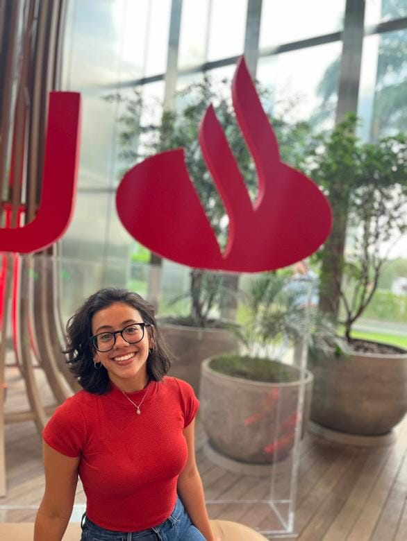

SANTANDERSETOR FINANCEIROSantander
Cientista de Dados Jr.
nov/2025 — nov/2026Quando fui efetivada como Cientista de Dados Jr., passei a acompanhar ainda mais de perto o caminho dos dados: construí e mantive pipelines, trabalhei com processos de ETL, tratamento e validação de bases e ajudei a deixar as informações prontas para uso. Também desenvolvi e atualizei dashboards, acompanhei indicadores e fiz análises para responder às demandas das áreas de negócio.
Estagiária — Ciência de Dados
nov/2024 — out/2025Entrei no Santander como estagiária em Ciência de Dados e fui aprendendo muito sobre como a área funciona no dia a dia. Trabalhei com consultas SQL, organização e preparação de bases, validações e atualização de dashboards e relatórios. Uma parte importante do trabalho era entender o que a área precisava e transformar isso em informação clara e confiável.